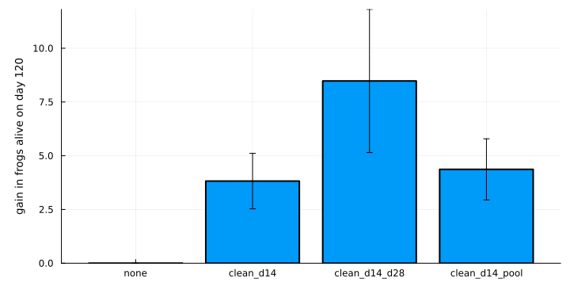

Which response to a Bd outbreak, with new actions?
- The question
- The pieces: a problem, draws, actions
- Running the model
- Which action leaves most frogs?
- Where the gain comes from
- Does the choice depend on the rule, or on what is counted?
- Is it worth learning more first?
- A check against the stored table
- The deterministic model gives a different answer
- What to take from this
[!NOTE]
Models in this tutorial
Model Source Category API page Stochastic individual-based Bd model, DrawertIBMProblemDrawert et al. 2017 published api/drawert2017.mdIts deterministic counterpart, DrawertODEProblemDrawert et al. 2017 published api/drawert2017.mdTwo pulses in one run this package modified api/drawert2017.mdCategories: published models reimplement a paper’s equations and are checked against it; modified models add structure to a published model; new models are new structure. Results from modified and new models are not published results. The decision analysis below is new work and illustrative: the weights on the parameter points are those of a design, not of a posterior, and the utility is a count of frogs.
The question
Bd has reached a pond. Drawert et al. (2017) compared single treatments: clean a share of the frogs, cull a share, or remove zoospores from the water, once (Does chance decide whether frogs survive? introduces the model). The package stores our runs of nine such treatments (load_drawert_decisions). A manager may want to compare responses that the table does not hold:
- clean the frogs on day 14 and again on day 28;
- clean the frogs and the water on day 14.
Both need new runs of the model. This tutorial makes them with DecisionAnalysis.jl, which this package supports through an extension: when both are loaded, the Drawert problems can be run over parameter draws × actions × replicates in one call, and the result goes straight into a decision analysis. Every comparison is with no intervention.
using Chytridiomycosis, DecisionAnalysis, Plots, Printf
default(linewidth = 2, size = (720, 380), legendfontsize = 8, guidefontsize = 9,
titlefontsize = 10, left_margin = 4Plots.mm, bottom_margin = 4Plots.mm)
nothingThe pieces: a problem, draws, actions
The problem is the stochastic model, run for one season of 120 days. Its parameters are a placeholder: each run takes them from a draw.
draws = load_drawert_decision_draws()
problem = DrawertIBMProblem(DrawertParameters(first(draws)); tfinal = 120.0)
first(draws)(draw_id = 37, group = "A", N = 62, γ = 5.73927902388375e-5, η = 17.8777834423818, ν0 = 0.0862707584165037, f = 0.530253593111411, σ0 = 0.478287360817194, μ = 1.03837436286965, load_growth_rate = 0.341402, weight = 32.23255813953488)The draws are 100 of the authors’ 2132 parameter points, a stratified sample by the authors’ survival group (A: nearly all frogs die, to E: nearly all survive). weight is the number of design points that a draw stands for. Using the weights as a belief says that every design point is equally likely. That is an assumption, made here for illustration: the points are a space-filling design over plausible ranges, and no data were fitted.
belief = SampleBelief(draws; weights = [d.weight for d in draws],
labels = [d.draw_id for d in draws])
(draws = length(belief), effective_sample_size = round(effective_sample_size(belief); digits = 1))(draws = 100, effective_sample_size = 82.0)The actions are the package’s own interventions. No intervention is nothing; a vector is several pulses in one run.
clean = DrawertIntervention(:clean_frogs, 14, 0.75)
actions = (; none = nothing,
clean_d14 = clean,
clean_d14_d28 = [clean, DrawertIntervention(:clean_frogs, 28, 0.75)],
clean_d14_pool = [clean, DrawertIntervention(:clean_environment, 14, 0.75)])
keys(actions)(:none, :clean_d14, :clean_d14_d28, :clean_d14_pool)Running the model
outcomes runs every draw under every action, six times. A replicate uses the same random numbers under each action (common random numbers), so two actions give the same run up to the first day on which they differ. This is 2400 runs and takes about twelve minutes.
table = outcomes(problem, actions, belief; replicates = 6, seed = 2017)
run_counts(table)(runs = 2400, ok = 2400, failed = 0, absent = 0)The table holds counts for each run, and no utility yet:
outcome_names(table)9-element Vector{Symbol}:
:initial_frogs
:survivors
:uninfected
:infected
:handled
:treatment_deaths
:frogs_extinct
:fungus_extinct
:persistenceWhich action leaves most frogs?
The utility is the number of frogs alive on day 120. The table gives each action’s expected number, its gain over no intervention, and two standard errors of the gain: one for the noise of the simulation alone, and one that also treats the 100 draws as a sample.
survivors = IndividualsUtility(:survivors)
decision = DecisionProblem(table, survivors; baseline = :none)
gains = DecisionProblem(payoff_table(table, survivors; baseline = :none), belief)
level = expected_utility_estimates(decision)
gain = expected_utility_estimates(gains)
handled = expected_utility_estimates(DecisionProblem(table, IndividualsUtility(:handled)))
println("| Action | Frogs alive, day 120 | Gain over no intervention | Error: simulation | Error: draws as a sample | Frogs handled |")
println("|:--|--:|--:|--:|--:|--:|")
for (l, g, h) in zip(level, gain, handled)
@printf("| `%s` | %.1f | %.1f | %.1f | %.1f | %.0f |\n", l.action, Float64(l.value),
Float64(g.value), g.simulation_error, g.standard_error, Float64(h.value))
end| Action | Frogs alive, day 120 | Gain over no intervention | Error: simulation | Error: draws as a sample | Frogs handled |
|---|---|---|---|---|---|
none | 30.0 | 0.0 | 0.0 | 0.0 | 0 |
clean_d14 | 33.8 | 3.8 | 0.6 | 1.3 | 69 |
clean_d14_d28 | 38.4 | 8.5 | 0.4 | 3.3 | 125 |
clean_d14_pool | 34.3 | 4.4 | 0.6 | 1.4 | 69 |
Cleaning the frogs twice leaves about eight more frogs per pond than doing nothing, about twice the gain of cleaning once, and it means handling nearly twice as many frogs. Adding a clean of the water to a single clean of the frogs changes little: its gain is within the simulation error of cleaning the frogs alone. The second standard error is large because the gain is concentrated in a few kinds of pond, as the next table shows.
bar([String(g.action) for g in gain], [Float64(g.value) for g in gain];
yerror = [g.standard_error for g in gain], legend = false,
ylabel = "gain in frogs alive on day 120", xlabel = "")
Where the gain comes from
conditional_problem averages within the authors’ survival groups.
by_group = conditional_problem(decision, :group)
gain_over_baseline(by_group)PayoffTable{Float64}: 4 actions × 5 states
| action | A | B | C | D | E |
|---|---|---|---|---|---|
none | 0.0 | 0.0 | 0.0 | 0.0 | 0.0 |
clean_d14 | 3.70543 | 14.9444 | 4.94118 | 0.73913 | -0.133333 |
clean_d14_d28 | 8.84109 | 36.625 | 6.82353 | 0.811594 | 0.0333333 |
clean_d14_pool | 3.92636 | 18.7083 | 6.9902 | 0.717391 | -0.0666667 |
The gain is largest in group B, ponds where a few frogs survive without help: a second clean there saves about 37 frogs, against 15 for one. In group A it saves about nine, and in groups D and E, where most frogs survive anyway, no action changes much.
The share of runs in each outcome class shows what the treatments do: they turn frog extinction and coexistence into loss of the fungus.
share(name) = [Float64(e.value) for e in
expected_utility_estimates(DecisionProblem(table, IndividualsUtility(name)))]
println("| Action | All frogs dead | Bd lost | Both present on day 120 |")
println("|:--|--:|--:|--:|")
for (a, x, y, z) in zip(action_labels(table), share(:frogs_extinct), share(:fungus_extinct),
share(:persistence))
@printf("| `%s` | %.2f | %.2f | %.2f |\n", a, x, y, z)
end| Action | All frogs dead | Bd lost | Both present on day 120 |
|---|---|---|---|
none | 0.57 | 0.21 | 0.21 |
clean_d14 | 0.55 | 0.29 | 0.16 |
clean_d14_d28 | 0.52 | 0.35 | 0.14 |
clean_d14_pool | 0.55 | 0.30 | 0.15 |
Does the choice depend on the rule, or on what is counted?
Expected survivors is one rule. Minimax regret over the draws agrees with it. Maximin cannot separate the actions, because under every action there are ponds where no frog survives.
rules = ["expected survivors" => MaxExpectedUtility(), "minimax regret over draws" => MinimaxRegret(),
"maximin over draws" => Maximin()]
[name => decide(decision, rule).chosen for (name, rule) in rules]3-element Vector{Pair{String, Vector{Symbol}}}:
"expected survivors" => [:clean_d14_d28]
"minimax regret over draws" => [:clean_d14_d28]
"maximin over draws" => [:none, :clean_d14, :clean_d14_d28, :clean_d14_pool]Counting uninfected frogs only, or uninfected minus infected, also leaves cleaning twice first:
println("| Action | Uninfected | Uninfected − infected |")
println("|:--|--:|--:|")
g(w) = expected_utility_estimates(DecisionProblem(payoff_table(table, InfectionUtility(; weight = w);
baseline = :none), belief))
for (a, b) in zip(g(0), g(1))
@printf("| `%s` | %.1f (%.1f) | %.1f (%.1f) |\n", a.action, Float64(a.value), a.standard_error,
Float64(b.value), b.standard_error)
end| Action | Uninfected | Uninfected − infected |
|---|---|---|
none | 0.0 (0.0) | 0.0 (0.0) |
clean_d14 | 4.7 (1.7) | 5.6 (3.2) |
clean_d14_d28 | 9.2 (2.6) | 10.0 (5.3) |
clean_d14_pool | 5.8 (1.9) | 7.2 (3.3) |
(Gain over no intervention, with its standard error in brackets.)
Is it worth learning more first?
The expected value of perfect information is what knowing the pond’s parameters exactly would add, in frogs, to choosing the best action now.
round(Float64(evpi(decision)); digits = 3)0.046Next to a gain of eight frogs it is nothing: cleaning twice is the best action, or tied for it, at almost every draw, so no measurement of the pond would change the choice among these four actions and under this utility. This would change if handling frogs counted against an action. The package has no cost per frog handled, and none is assumed here.
A check against the stored table
The stored table has none and the single clean on day 14, from 30 replicates with other seeds. Read through the same extension, it should agree with the new runs.
stored = drawert_outcome_table()
alive = FunctionUtility(o -> o.uninfected_d120 + o.infected_d120; name = :alive_d120)
old = expected_utility_estimates(DecisionProblem(payoff_table(stored, alive; baseline = :none),
SampleBelief(stored)))
old_level = expected_utility_estimates(DecisionProblem(stored, alive; baseline = :none))
println("| | Frogs alive, day 120, no intervention | Gain of cleaning on day 14 (simulation error) |")
println("|:--|--:|--:|")
i = findfirst(e -> e.action === :clean_frogs_d14_f75, old)
@printf("| stored table, 30 replicates | %.2f | %.2f (%.2f) |\n", Float64(old_level[1].value),
Float64(old[i].value), old[i].simulation_error)
@printf("| new runs, 6 replicates | %.2f | %.2f (%.2f) |\n", Float64(level[1].value),
Float64(gain[2].value), gain[2].simulation_error)| Frogs alive, day 120, no intervention | Gain of cleaning on day 14 (simulation error) | |
|---|---|---|
| stored table, 30 replicates | 30.01 | 4.27 (0.32) |
| new runs, 6 replicates | 29.96 | 3.82 (0.57) |
The two agree within their simulation errors.
The deterministic model gives a different answer
The same call runs the deterministic model, which has the same draws and single-pulse actions and no chance. One replicate is enough.
ode = DrawertODEProblem(DrawertParameters(first(draws)); tfinal = 120.0)
dtable = outcomes(ode, (; none = nothing, clean_d14 = clean), belief; replicates = 1, seed = 1)
dlevel = expected_utility_estimates(DecisionProblem(dtable, survivors; baseline = :none))
println("| Model | Frogs alive, day 120, no intervention | With cleaning on day 14 |")
println("|:--|--:|--:|")
@printf("| deterministic | %.1f | %.1f |\n", Float64(dlevel[1].value), Float64(dlevel[2].value))
@printf("| stochastic | %.1f | %.1f |\n", Float64(level[1].value), Float64(level[2].value))| Model | Frogs alive, day 120, no intervention | With cleaning on day 14 |
|---|---|---|
| deterministic | 13.3 | 19.6 |
| stochastic | 30.0 | 33.8 |
Without intervention the deterministic model leaves fewer than half as many frogs alive on day 120 as the stochastic one, because in it Bd is never lost by chance. It also puts the gain from one clean higher. A decision analysis of this system should use the stochastic model.
What to take from this
- With the package’s extension, a new set of actions is a named tuple, and the model runs under them in one call; the outcomes are counts of frogs, with no utility built in.
- Among the four actions, cleaning the frogs on days 14 and 28 leaves most frogs on day 120: about eight more per pond than no intervention, against about four for one clean. It handles nearly twice as many frogs.
- Cleaning the water as well as the frogs adds nothing that these runs can detect.
- The value of perfect information is close to zero for this choice.
- All of it is illustrative: the weights are those of a design, one season is counted, and the two-pulse action is an addition of this package, not a published strategy.